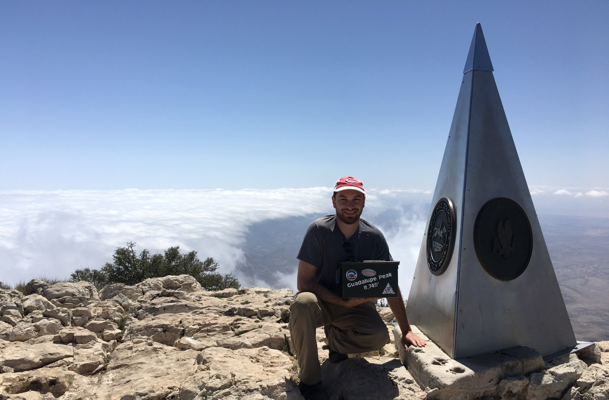
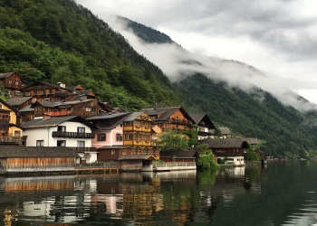
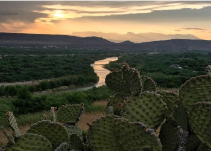
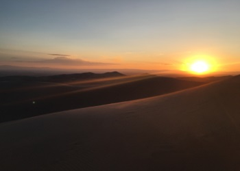

Zach Savage
Front-end Developer Work

Featured Work

Hallstatt
Link to project 1

Big Bend
Link to project 2

Sand Dunes
Link to project 3
Hallstatt Austria
My wife and I took this photo coming into the port of Hallstatt in Austria
Big Bend National Park
I took this photo at sunset in Big Bend National Park. You can see the Mexican/US border where the river flows
Sand Dunes National Park
My wife and I took this photo when the sun was setting in Sand Dunes National Park in Colorado.